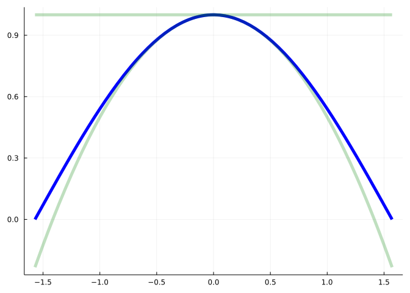
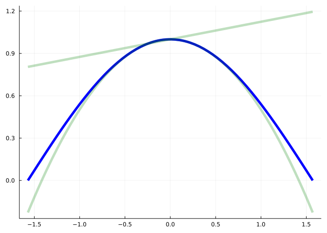
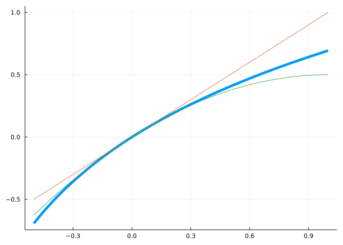
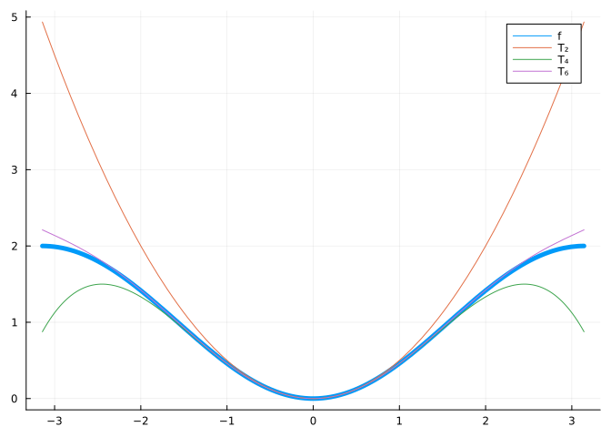
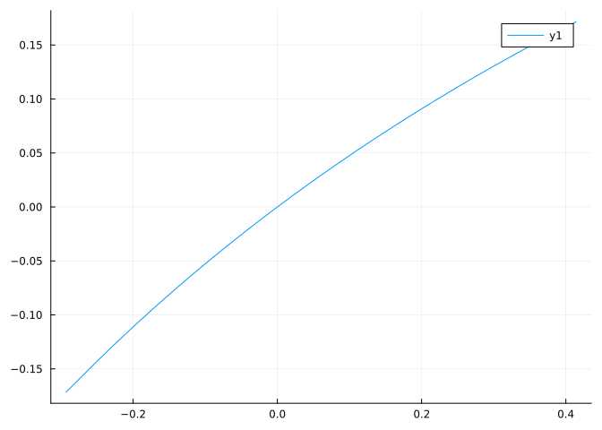
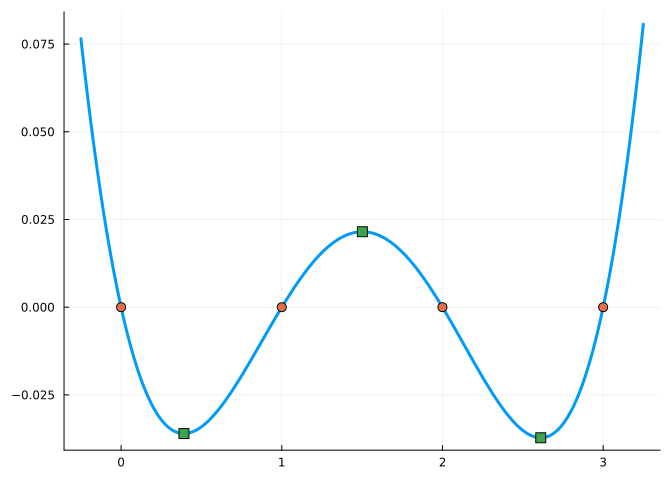

using CalculusWithJulia
using Plots
using SymPy
using Unitful35 Taylor Polynomials and other Approximating Polynomials
This section uses these add-on packages:
The tangent line was seen to be the “best” linear approximation to a function at a point \(c\). Approximating a function by a linear function gives an easier to use approximation at the expense of accuracy. It suggests a tradeoff between ease and accuracy. Is there a way to gain more accuracy at the expense of ease?
Quadratic functions are still fairly easy to work with. Is it possible to find the best “quadratic” approximation to a function at a point \(c\).
More generally, for a given \(n\), what would be the best polynomial of degree \(n\) to approximate \(f(x)\) at \(c\)?
We will see in this section how the Taylor polynomial answers these questions, and is the appropriate generalization of the tangent line approximation.
![A Figure]()
Illustration of the Taylor polynomial of degree \(k\), \(T_k(x)\), at \(c=0\) and its graph overlayed on that of the function \(1 - \cos(x)\).
35.1 The secant line and the tangent line
We approach this general problem much more indirectly than is needed. We introducing notations that are attributed to Newton and proceed from there. By leveraging SymPy we avoid tedious computations and hopefully gain some insight.
Suppose \(f(x)\) is a function which is defined in a neighborhood of \(c\) and has as many continuous derivatives as we care to take at \(c\).
We have two related formulas:
- The secant line connecting \((c, f(c))\) and \((c+h, f(c+h))\) for a value of \(h>0\) is given in point-slope form by
\[ sl(x) = f(c) + \frac{(f(c+h) - f(c))}{h} \cdot (x-c). \]
The slope is the familiar approximation to the derivative: \((f(c+h)-f(c))/h\).
- The tangent line to the graph of \(f(x)\) at \(x=c\) is described by the function
\[ tl(x) = f(c) + f'(c) \cdot(x - c). \]
The key is the term multiplying \((x-c)\) for the secant line is an approximation to the related term for the tangent line. That is, the secant line approximates the tangent line, which is the linear function that best approximates the function at the point \((c, f(c))\). This is quantified by the mean value theorem which states under our assumptions on \(f(x)\) that there exists some \(\xi\) between \(x\) and \(c\) for which:
\[ f(x) - tl(x) = \frac{f''(\xi)}{2} \cdot (x-c)^2. \]
The term “best” is deserved, as any other straight line will differ at least in an \((x-c)\) term, which in general is larger than an \((x-c)^2\) term for \(x\) “near” \(c\).
(This is a consequence of Cauchy’s mean value theorem with \(F(c) = f(c) - f'(c)\cdot(c-x)\) and \(G(c) = (c-x)^2\)
\[\begin{align*} \frac{F'(\xi)}{G'(\xi)} &= \frac{f'(\xi) - f''(\xi)(\xi-x) - f(\xi)\cdot 1}{2(\xi-x)} \\ &= -f''(\xi)/2\\ &= \frac{F(c) - F(x)}{G(c) - G(x)}\\ &= \frac{f(c) - f'(c)(c-x) - (f(x) - f'(x)(x-x))}{(c-x)^2 - (x-x)^2} \\ &= \frac{f(c) + f'(c)(x-c) - f(x)}{(x-c)^2} \end{align*}\]
That is, \(f(x) = f(c) + f'(c)(x-c) + f''(\xi)/2\cdot(x-c)^2\), or \(f(x)-tl(x)\) is as described.)
The secant line also has an interpretation that will generalize - it is the smallest order polynomial that goes through, or interpolates, the points \((c,f(c))\) and \((c+h, f(c+h))\). This is obvious from the construction - as this is how the slope is derived - but from the formula itself requires showing \(tl(c) = f(c)\) and \(tl(c+h) = f(c+h)\). The former is straightforward, as \((c-c) = 0\), so clearly \(tl(c) = f(c)\). The latter requires a bit of algebra.
We have:
The best linear approximation at a point \(c\) is related to the linear polynomial interpolating the points \(c\) and \(c+h\) as \(h\) goes to \(0\).
This is the relationship we seek to generalize through our round about approach below:
The best approximation at a point \(c\) by a polynomial of degree \(n\) or less is related to the polynomial interpolating through the points \(c, c+h, \dots, c+nh\) as \(h\) goes to \(0\).
As in the linear case, there is flexibility in the exact points chosen for the interpolation.
Now, we take a small detour to define some notation. Instead of writing our two points as \(c\) and \(c+h,\) we use \(x_0\) and \(x_1\). For any set of points \(x_0, x_1, \dots, x_n\), define the divided differences of \(f\) inductively, as follows:
\[\begin{align*} f[x_0] &= f(x_0) \\ f[x_0, x_1] &= \frac{f[x_1] - f[x_0]}{x_1 - x_0}\\ \cdots &\\ f[x_0, x_1, x_2, \dots, x_n] &= \frac{f[x_1, \dots, x_n] - f[x_0, x_1, x_2, \dots, x_{n-1}]}{x_n - x_0}. \end{align*}\]
We see the first two values look familiar, and to generate more we just take certain ratios akin to those formed when finding a secant line.
With this notation the secant line can be re-expressed as:
\[ sl(x) = f[c] + f[c, c+h] \cdot (x-c). \]
If we think of \(f[c, c+h]\) as an approximate first derivative, we have an even stronger parallel between a secant line \(x=c\) and the tangent line at \(x=c\): \(tl(x) = f(c) + f'(c)\cdot (x-c)\).
We use SymPy to investigate. First we create a recursive function to compute the divided differences:
divided_differences(f, x) = f(x)
function divided_differences(f, x, xs...)
xs = sort(vcat(x, xs...))
(divided_differences(f, xs[2:end]...) - divided_differences(f, xs[1:end-1]...)) / (xs[end] - xs[1])
enddivided_differences (generic function with 2 methods)In the following, by adding a getindex method, we enable the [] notation of Newton to work with symbolic functions, like u() defined below, which is used in place of \(f\):
Base.getindex(u::SymFunction, xs...) = divided_differences(u, xs...)
@syms x::real c::real h::positive u()
ex = u[c, c+h]
\[
\frac{- u{\left(c \right)} + u{\left(c + h \right)}}{h}
\]
We can take a limit and see the familiar (yet differently represented) value of \(u'(c)\):
limit(ex, h => 0)
\[
\left. \frac{d}{d \xi_{1}} u{\left(\xi_{1} \right)} \right|_{\substack{ \xi_{1}=c }}
\]
The choice of points is flexible. Here we use \(c-h\) and \(c+h\):
limit(u[c-h, c+h], h=>0)
\[
\left. \frac{d}{d \xi_{1}} u{\left(\xi_{1} \right)} \right|_{\substack{ \xi_{1}=c }}
\]
Now, let’s look at:
ex₂ = u[c, c+h, c+2h]
simplify(ex₂)
\[
\frac{u{\left(c \right)} - 2 u{\left(c + h \right)} + u{\left(c + 2 h \right)}}{2 h^{2}}
\]
Not so bad after simplification. The limit shows this to be an approximation to the second derivative divided by \(2\):
limit(ex₂, h => 0)
\[
\frac{\left. \frac{d^{2}}{d \xi_{1}^{2}} u{\left(\xi_{1} \right)} \right|_{\substack{ \xi_{1}=c }}}{2}
\]
(The expression is, up to a divisor of \(2\), the second order forward difference equation, a well-known approximation to \(f''\).)
This relationship between higher-order divided differences and higher-order derivatives generalizes. This is expressed in this theorem:
Suppose \(m=x_0 < x_1 < x_2 < \dots < x_n=M\) are distinct points. If \(f\) has \(n\) continuous derivatives then there exists a value \(\xi\), where \(m < \xi < M\), satisfying:
\[ f[x_0, x_1, \dots, x_n] = \frac{1}{n!} \cdot f^{(n)}(\xi). \]
This immediately applies to the above, where we parameterized by \(h\): \(x_0=c, x_1=c+h, x_2 = c+2h\). For then, as \(h\) goes to \(0\), it must be that \(m, M \rightarrow c\), and so the limit of the divided differences must converge to \((1/2!) \cdot f^{(2)}(c)\), as \(f^{(2)}(\xi)\) converges to \(f^{(2)}(c)\).
A proof based on Rolle’s theorem appears in the appendix.
35.2 Quadratic approximations; interpolating polynomials
Why the fuss? The answer comes from a result of Newton on interpolating polynomials. Consider a function \(f\) and \(n+1\) points \(x_0\), \(x_1, \dots, x_n\). Then an interpolating polynomial is a polynomial of least degree that goes through each point \((x_i, f(x_i))\). The Newton form of such a polynomial can be written as:
\[\begin{align*} f[x_0] &+ f[x_0,x_1] \cdot (x-x_0) + f[x_0, x_1, x_2] \cdot (x-x_0) \cdot (x-x_1) + \\ & \cdots + f[x_0, x_1, \dots, x_n] \cdot (x-x_0)\cdot \cdots \cdot (x-x_{n-1}). \end{align*}\]
The case \(n=0\) gives the value \(f[x_0] = f(c)\), which can be interpreted as the slope-\(0\) line that goes through the point \((c,f(c))\).
We are familiar with the case \(n=1\), with \(x_0=c\) and \(x_1=c+h\), this becomes our secant-line formula:
\[ f[c] + f[c, c+h](x-c). \]
As mentioned, we can verify directly that it interpolates the points \((c,f(c))\) and \((c+h, f(c+h))\). Here we let SymPy do the algebra:
p₁ = u[c] + u[c, c+h] * (x-c)
p₁(x => c) - u(c), p₁(x => c+h) - u(c+h)(0, 0)Now for something new. Take the \(n=2\) case with \(x_0 = c\), \(x_1 = c + h\), and \(x_2 = c+2h\). Then the interpolating polynomial is:
\[ f[c] + f[c, c+h](x-c) + f[c, c+h, c+2h](x-c)(x-(c+h)). \]
We add the next term to our previous polynomial and simplify
p₂ = p₁ + u[c, c+h, c+2h] * (x-c) * (x-(c+h))
simplify(p₂)
\[
\frac{h^{2} u{\left(c \right)} + h \left(c - x\right) \left(u{\left(c \right)} - u{\left(c + h \right)}\right) + \frac{\left(c - x\right) \left(c + h - x\right) \left(u{\left(c \right)} - 2 u{\left(c + h \right)} + u{\left(c + 2 h \right)}\right)}{2}}{h^{2}}
\]
We can check that this interpolates the three points. Notice that at \(x_0=c\) and \(x_1=c+h\), the last term, \(f[x_0, x_1, x_2]\cdot(x-x_0)(x-x_1)\), vanishes, so we already have the polynomial interpolating there. Only the value \(x_2=c+2h\) remains to be checked:
p₂(x => c+2h) - u(c+2h)
\[
h \left(- \frac{- u{\left(c \right)} + u{\left(c + h \right)}}{h} + \frac{- u{\left(c + h \right)} + u{\left(c + 2 h \right)}}{h}\right) - u{\left(c \right)} + 2 u{\left(c + h \right)} - u{\left(c + 2 h \right)}
\]
Hmm, doesn’t seem correct - that was supposed to be \(0\). The issue isn’t the math, it is that SymPy needs to be encouraged to simplify:
simplify(p₂(x => c+2h) - u(c+2h))
\[
0
\]
By contrast, at the point \(x=c+3h\) we have no guarantee of interpolation, and indeed don’t, as this expression is not always zero:
simplify(p₂(x => c+3h) - u(c+3h))
\[
u{\left(c \right)} - 3 u{\left(c + h \right)} + 3 u{\left(c + 2 h \right)} - u{\left(c + 3 h \right)}
\]
Interpolating polynomials are of interest in their own right, but for now we want to use them as motivation for the best polynomial approximation of a certain degree for a function. Motivated by how the secant line leads to the tangent line, we note that coefficients of the quadratic interpolating polynomial above have limits as \(h\) goes to \(0\), leaving this polynomial:
\[ f(c) + f'(c) \cdot (x-c) + \frac{1}{2!} \cdot f''(c) (x-c)^2. \]
This is clearly related to the tangent line approximation of \(f(x)\) at \(x=c\), but carrying an extra quadratic term.
Here we visualize the approximations with the function \(f(x) = \cos(x)\) at \(c=0\).
f(x) = cos(x)
a, b = -pi/2, pi/2
c = 0
h = 1/4
fp = -sin(c) # by hand, or use diff(f), ...
fpp = -cos(c)
p = plot(f, a, b, linewidth=5, legend=false, color=:blue)
plot!(p, x->f(c) + fp*(x-c), a, b; color=:green, alpha=0.25, linewidth=5) # tangent line is flat
plot!(p, x->f(c) + fp*(x-c) + (1/2)*fpp*(x-c)^2, a, b; color=:green, alpha=0.25, linewidth=5) # a parabola
p
This graph illustrates that the extra quadratic term can track the curvature of the function, whereas the tangent line itself can’t. So, we have a polynomial which is a “better” approximation, is it the best approximation?
The Cauchy mean value theorem, as in the case of the tangent line, will guarantee the existence of \(\xi\) between \(c\) and \(x\), for which
\[ f(x) - \left(f(c) + f'(c) \cdot(x-c) + \frac{1}{2}\cdot f''(c) \cdot (x-c)^2 \right) = \frac{1}{3!}f'''(\xi) \cdot (x-c)^3. \]
In this sense, the above quadratic polynomial, called the Taylor Polynomial of degree 2, is the best quadratic approximation to \(f\), as the difference goes to \(0\) at a rate of \((x-c)^3\).
The graphs of the secant line and approximating parabola for \(h=1/4\) are similar:
f(x) = cos(x)
a, b = -pi/2, pi/2
c = 0
h = 1/4
x0, x1, x2 = c-h, c, c+h
f0 = divided_differences(f, x0)
fd = divided_differences(f, x0, x1)
fdd = divided_differences(f, x0, x1, x2)
p = plot(f, a, b, color=:blue, linewidth=5, legend=false)
plot!(p, x -> f0 + fd*(x-x0), a, b, color=:green, alpha=0.25, linewidth=5);
plot!(p, x -> f0 + fd*(x-x0) + fdd * (x-x0)*(x-x1), a,b, color=:green, alpha=0.25, linewidth=5);
p
Though similar, the graphs are not identical, as the interpolating polynomials aren’t the best approximations. For example, in the tangent-line graph the parabola only intersects the cosine graph at \(x=0\), whereas for the secant-line graph - by definition - the parabola intersects the graph at least \(2\) times and the interpolating polynomial \(3\) times (at \(x_0\), \(x_1\), and \(x_2\)).
Example
Consider the function \(f(t) = \log(1 + t)\). We have mentioned that for \(t\) small, the value \(t\) is a good approximation. A better one becomes:
\[ f(0) + f'(0) \cdot t + \frac{1}{2} \cdot f''(0) \cdot t^2 = 0 + 1t - \frac{t^2}{2} \]
A graph shows the difference:
f(t) = log(1 + t)
a, b = -1/2, 1
plot(f, a, b, legend=false, linewidth=5)
plot!(t -> t, a, b)
plot!(t -> t - t^2/2, a, b)
Though we can see that the tangent line is a good approximation, the quadratic polynomial tracks the logarithm better farther from \(c=0\).
Example
A wire is bent in the form of a half circle with radius \(R\) centered at \((0,R)\), so the bottom of the wire is at the origin. A bead is released on the wire at angle \(\theta\). As time evolves, the bead will slide back and forth. How? (Ignoring friction.)
Let \(U\) be the potential energy, \(U=mgh = mgR \cdot (1 - \cos(\theta))\). The velocity of the object will depend on \(\theta\) - it will be \(0\) at the high point, and largest in magnitude at the bottom - and is given by \(v(\theta) = R \cdot d\theta/ dt\). (The bead moves along the wire so its distance traveled is \(R\cdot \Delta \theta\), this, then, is just the time derivative of distance.)
By ignoring friction, the total energy is conserved giving:
\[ K = \frac{1}{2}m v^2 + mgR \cdot (1 - \cos(\theta)) = \frac{1}{2} m R^2 (\frac{d\theta}{dt})^2 + mgR \cdot (1 - \cos(\theta)). \]
The value of \(1-\cos(\theta)\) inhibits further work which would be possible were there an easier formula there. In fact, we could try the excellent approximation \(1 - \theta^2/2\) from the quadratic approximation. Then we have:
\[ K \approx \frac{1}{2} m R^2 (\frac{d\theta}{dt})^2 + mgR \cdot (1 - \theta^2/2). \]
Assuming equality and differentiating in \(t\) gives by the chain rule:
\[ 0 = \frac{1}{2} m R^2 2\frac{d\theta}{dt} \cdot \frac{d^2\theta}{dt^2} - mgR \theta\cdot \frac{d\theta}{dt}. \]
This can be solved to give this relationship:
\[ \frac{d^2\theta}{dt^2} = - \frac{g}{R}\theta. \]
The solution to this “equation” can be written (in some parameterization) as \(\theta(t)=A\cos \left(\omega t+\phi \right)\). This motion is the well-studied simple harmonic oscillator, a model for a simple pendulum.
Example: optimization
Consider the following approach to finding the minimum or maximum of a function:
- At \(x_k\) fit a quadratic polynomial to \(f(x)\) matching the derivative and second derivative of \(f\).
- Let \(x_{k+1}\) be at the vertex of this fitted quadratic polynomial
- Iterate to convergence
The polynomial in question will be the Taylor polynomial of degree \(2\):
\[ T_2(x) = f(x_k) + f'(x_k)(x-x_k) + \frac{f''(x_k)}{2}(x - x_k)^2 \]
The vertex of this quadratic polynomial will be when its derivative is \(0\) which can be solved for \(x_{k+1}\) giving:
\[ x_{k+1} = x_k - \frac{f'(x_k)}{f''(x_k)}. \]
This assumes \(f''(x_k)\) is non-zero.
On inspection, it is seen that this is Newton’s method applied to \(f'(x)\). This method, when convergent, finds a zero of \(f'(x)\). We know that should the algorithm converge, it will have found a critical point, not necessarily a value for a local extrema.
35.3 The Taylor polynomial of degree \(n\)
Starting with the Newton form of the interpolating polynomial of smallest degree:
\[\begin{align*} f[x_0] &+ f[x_0,x_1] \cdot (x - x_0) + f[x_0, x_1, x_2] \cdot (x - x_0)\cdot(x-x_1) + \\ & \cdots + f[x_0, x_1, \dots, x_n] \cdot (x-x_0) \cdot \cdots \cdot (x-x_{n-1}). \end{align*}\]
and taking \(x_i = c + i\cdot h\), for a given \(n\), we have in the limit as \(h > 0\) goes to zero that coefficients of this polynomial converge to the coefficients of the Taylor Polynomial of degree n:
\[ f(c) + f'(c)\cdot(x-c) + \frac{f''(c)}{2!}(x-c)^2 + \cdots + \frac{f^{(n)}(c)}{n!} (x-c)^n. \]
This polynomial will be the best approximation of degree \(n\) or less to the function \(f\), near \(c\). The error will be given - again by an application of the Cauchy mean value theorem:
\[ \frac{1}{(n+1)!} \cdot f^{(n+1)}(\xi) \cdot (x-c)^n \]
for some \(\xi\) between \(c\) and \(x\).
The Taylor polynomial for \(f\) about \(c\) of degree \(n\) can be computed by taking \(n\) derivatives. For such a task, the computer is very helpful. In SymPy the series function will compute the Taylor polynomial for a given \(n\). For example, here is the series expansion to 10 terms of the function \(\log(1+x)\) about \(c=0\):
c, n = 0, 10
l = series(log(1 + x), x, c, n+1)
\[
x - \frac{x^{2}}{2} + \frac{x^{3}}{3} - \frac{x^{4}}{4} + \frac{x^{5}}{5} - \frac{x^{6}}{6} + \frac{x^{7}}{7} - \frac{x^{8}}{8} + \frac{x^{9}}{9} - \frac{x^{10}}{10} + O\left(x^{11}\right)
\]
A pattern can be observed.
Using series, we can see Taylor polynomials for several familiar functions:
series(1/(1-x), x, 0, 10) # sum x^i for i in 0:n
\[
1 + x + x^{2} + x^{3} + x^{4} + x^{5} + x^{6} + x^{7} + x^{8} + x^{9} + O\left(x^{10}\right)
\]
series(exp(x), x, 0, 10) # sum x^i/i! for i in 0:n
\[
1 + x + \frac{x^{2}}{2} + \frac{x^{3}}{6} + \frac{x^{4}}{24} + \frac{x^{5}}{120} + \frac{x^{6}}{720} + \frac{x^{7}}{5040} + \frac{x^{8}}{40320} + \frac{x^{9}}{362880} + O\left(x^{10}\right)
\]
series(sin(x), x, 0, 10) # sum (-1)^i * x^(2i+1) / (2i+1)! for i in 0:n
\[
x - \frac{x^{3}}{6} + \frac{x^{5}}{120} - \frac{x^{7}}{5040} + \frac{x^{9}}{362880} + O\left(x^{10}\right)
\]
series(cos(x), x, 0, 10) # sum (-1)^i * x^(2i) / (2i)! for i in 0:n
\[
1 - \frac{x^{2}}{2} + \frac{x^{4}}{24} - \frac{x^{6}}{720} + \frac{x^{8}}{40320} + O\left(x^{10}\right)
\]
Each of these last three have a pattern that can be expressed quite succinctly if the denominator is recognized as \(n!\).
The output of series includes a big “Oh” term, which identifies the scale of the error term, but also gets in the way of using the output. SymPy provides the removeO method to strip this. (It is called as object.removeO(), as it is a method of an object in SymPy.)
Note
A Taylor polynomial of degree \(n\) consists of \(n+1\) terms and an error term. The “Taylor series” is an infinite collection of terms, the first \(n+1\) matching the Taylor polynomial of degree \(n\). The fact that series are infinite means care must be taken when even talking about their existence, unlike a Tyalor polynomial, which is just a polynomial and exists as long as a sufficient number of derivatives are available.
We define a function to compute Taylor polynomials from a function. The following returns a function, not a symbolic object, using D, from CalculusWithJulia, which is based on ForwardDiff.derivative, to find higher-order derivatives:
function taylor_poly(f, c=0, n=2)
x -> f(c) + sum(D(f, i)(c) * (x-c)^i / factorial(i) for i in 1:n)
endtaylor_poly (generic function with 3 methods)With a function, we can compare values. For example, here we see the difference between the Taylor polynomial and the answer for a small value of \(x\):
a = .1
f(x) = log(1+x)
Tn = taylor_poly(f, 0, 5)
Tn(a) - f(a)1.5352900840925887e-735.3.1 Plotting
Let’s now visualize a function and the two approximations - the Taylor polynomial and the interpolating polynomial. We use this function to generate the interpolating polynomial as a function:
function newton_form(f, xs)
x -> begin
tot = divided_differences(f, xs[1])
for i in 2:length(xs)
tot += divided_differences(f, xs[1:i]...) * prod([x-xs[j] for j in 1:(i-1)])
end
tot
end
endnewton_form (generic function with 1 method)To see a plot, we have
𝒇(x) = sin(x)
𝒄, 𝒉, 𝒏 = 0, 1/4, 4
int_poly = newton_form(𝒇, [𝒄 + i*𝒉 for i in 0:𝒏])
tp = taylor_poly(𝒇, 𝒄, 𝒏)
𝒂, 𝒃 = -pi, pi
plot(𝒇, 𝒂, 𝒃; linewidth=5, label="f")
plot!(int_poly; color=:green, label="interpolating")
plot!(tp; color=:red, label="Taylor")To get a better sense, we plot the residual differences here:
d1(x) = 𝒇(x) - int_poly(x)
d2(x) = 𝒇(x) - tp(x)
plot(d1, 𝒂, 𝒃; color=:blue, label="interpolating")
plot!(d2; color=:green, label="Taylor")The graph should be \(0\) at each of the points in xs, which we can verify in the graph above. Plotting over a wider region shows a common phenomenon that these polynomials approximate the function near the values, but quickly deviate away:
In this graph we make a plot of the Taylor polynomial for different sizes of \(n\) for the function \(f(x) = 1 - \cos(x)\):
f(x) = 1 - cos(x)
a, b = -pi, pi
plot(f, a, b, linewidth=5, label="f")
plot!(taylor_poly(f, 0, 2), label="T₂")
plot!(taylor_poly(f, 0, 4), label="T₄")
plot!(taylor_poly(f, 0, 6), label="T₆")
Though all are good approximations near \(c=0\), as more terms are included, the Taylor polynomial becomes a better approximation over a wider range of values.
Example: period of an orbiting satellite
Kepler’s third law of planetary motion states:
The square of the orbital period of a planet is directly proportional to the cube of the semi-major axis of its orbit.
In formulas, \(P^2 = a^3 \cdot (4\pi^2) / (G\cdot(M + m))\), where \(M\) and \(m\) are the respective masses. Suppose a satellite is in low earth orbit with a constant height, \(a\). Use a Taylor polynomial to approximate the period using Kepler’s third law to relate the quantities.
Suppose \(R\) is the radius of the earth and \(h\) the height above the earth assuming \(h\) is much smaller than \(R\). The mass \(m\) of a satellite is negligible to that of the earth, so \(M+m=M\) for this purpose. We have:
\[ P = \frac{2\pi}{\sqrt{G\cdot M}} \cdot (h+R)^{3/2} = \frac{2\pi}{\sqrt{G\cdot M}} \cdot R^{3/2} \cdot (1 + h/R)^{3/2} = P_0 \cdot (1 + h/R)^{3/2}, \]
where \(P_0\) collects terms that involve the constants.
We can expand \((1+x)^{3/2}\) to fifth order, to get:
\[ (1+x)^{3/2} \approx 1 + \frac{3x}{2} + \frac{3x^2}{8} - \frac{1x^3}{16} + \frac{3x^4}{128} -\frac{3x^5}{256} \]
Our approximation becomes:
\[ P \approx P_0 \cdot (1 + \frac{3(h/R)}{2} + \frac{3(h/R)^2}{8} - \frac{(h/R)^3}{16} + \frac{3(h/R)^4}{128} - \frac{3(h/R)^5}{256}). \]
Typically, if \(h\) is much smaller than \(R\) the first term is enough giving a formula like \(P \approx P_0 \cdot(1 + \frac{3h}{2R})\).
A satellite phone utilizes low orbit satellites to relay phone communications. The Iridium system uses satellites with an elevation \(h=780km\). The radius of the earth is \(3,959 miles\), the mass of the earth is \(5.972 × 10^{24} kg\), and the gravitational constant, \(G\) is \(6.67408 \cdot 10^{-11}\) \(m^3/(kg \cdot s^2)\).
Compare the approximate value with \(1\) term to the exact value.
G = 6.67408e-11
H = 780 * 1000
R = 3959 * 1609.34 # 1609 meters per mile
M = 5.972e24
P0, HR = (2pi)/sqrt(G*M) * R^(3/2), H/R
Preal = P0 * (1 + HR)^(3/2)
P1 = P0 * (1 + 3*HR/2)
Preal, P1(6018.78431252517, 5990.893153415102)With terms out to the fifth power, we get a better approximation:
P5 = P0 * (1 + 3*HR/2 + 3*HR^2/8 - HR^3/16 + 3*HR^4/128 - 3*HR^5/256)6018.784204505923The units of the period above are in seconds. That answer here is about \(100\) minutes:
Preal/60100.31307187541951When \(H\) is much smaller than \(R\) the approximation with \(5\)th order is really good, and serviceable with just \(1\) term. Next we check if this is the same when \(H\) is larger than \(R\).
The height of a GPS satellite is about \(12,550\) miles. Compute the period of a circular orbit and compare with the estimates.
Hₛ = 12250 * 1609.34 # 1609 meters per mile
HRₛ = Hₛ/R
Prealₛ = P0 * (1 + HRₛ)^(3/2)
P1ₛ = P0 * (1 + 3*HRₛ/2)
P5ₛ = P0 * (1 + 3*HRₛ/2 + 3*HRₛ^2/8 - HRₛ^3/16 + 3*HRₛ^4/128 - 3*HRₛ^5/256)
Prealₛ, P1ₛ, P5ₛ(41930.52564789311, 28553.22950490504, 31404.730666178537)We see the Taylor polynomial underestimates badly in this case. A reminder that these approximations are locally good, but may not be good on all scales. Here \(h \approx 3R\). We can see from this graph of \((1+x)^{3/2}\) and its \(5\)th degree Taylor polynomial \(T_5\) that it is a bad approximation when \(x > 2\).
Finally, we show how to use the Unitful package. This package allows us to define different units, carry these units through computations, and convert between similar units with uconvert. In this example, we define several units, then show how they can then be used as constants.
m, mi, kg, s, hr = u"m", u"mi", u"kg", u"s", u"hr"
G = 6.67408e-11 * m^3 / kg / s^2
H = uconvert(m, 12250 * mi) # unit convert miles to meter
R = uconvert(m, 3959 * mi)
M = 5.972e24 * kg
P0, HR = (2pi)/sqrt(G*M) * R^(3/2), H/R
Preal = P0 * (1 + HR)^(3/2) # in seconds
Preal, uconvert(hr, Preal) # ≈ 11.65 hours(41930.68197490307 s, 11.647411659695297 hr)We see Preal has the right units - the units of mass and distance cancel leaving a measure of time - but it is hard to sense how long this is. Converting to hours, helps us see the satellite orbits about twice per day.
Example: computing \(\log(x)\)
Where exactly does the value assigned to \(\log(5)\) come from? The value needs to be computed. At some level, many questions resolve down to the basic operations of addition, subtraction, multiplication, and division. Preferably not the latter, as division is slow. Polynomials then should be fast to compute, and so computing logarithms using a polynomial becomes desirable.
But how? One can see details of a possible way here.
First, there is usually a reduction stage. In this phase, the problem is transformed in a manner to one involving only a fixed interval of values. For this, function values of \(k\) and \(m\) are found so that \(x = 2^k \cdot (1+m)\) and \(\sqrt{2}/2 < 1+m < \sqrt{2}\). If these are found, then \(\log(x)\) can be computed with \(k \cdot \log(2) + \log(1+m)\). The first value - a multiplication - can easily be computed using pre-computed value of \(\log(2)\), the second then reduces the problem to an interval.
Now, for this problem a further trick is utilized, writing \(s= m/(2+m)\) so that \(\log(1+m)=\log(1+s)-\log(1-s)\) for some small range of \(s\) values. These combined make it possible to compute \(\log(x)\) for any real \(x\).
To compute \(\log(1\pm s)\), we can find a Taylor polynomial. Let’s go out to degree \(19\) and use SymPy to do the work:
@syms s
aₗ = series(log(1 + s), s, 0, 19)
bₗ = series(log(1 - s), s, 0, 19)
a_b = (aₗ - bₗ).removeO() # remove"Oh" not remove"zero"
\[
\frac{2 s^{17}}{17} + \frac{2 s^{15}}{15} + \frac{2 s^{13}}{13} + \frac{2 s^{11}}{11} + \frac{2 s^{9}}{9} + \frac{2 s^{7}}{7} + \frac{2 s^{5}}{5} + \frac{2 s^{3}}{3} + 2 s
\]
This is re-expressed as \(2s + s \cdot p\) with \(p\) given by:
cancel((a_b - 2s)/s)
\[
\frac{2 s^{16}}{17} + \frac{2 s^{14}}{15} + \frac{2 s^{12}}{13} + \frac{2 s^{10}}{11} + \frac{2 s^{8}}{9} + \frac{2 s^{6}}{7} + \frac{2 s^{4}}{5} + \frac{2 s^{2}}{3}
\]
Now, \(2s = m - s\cdot m\), so the above can be reworked to be \(\log(1+m) = m - s\cdot(m-p)\).
(For larger values of \(m\), a similar, but different approximation, can be used to minimize floating point errors.)
How big can the error be between this approximations and \(\log(1+m)\)? We plot to see how big \(s\) can be:
@syms v
plot(v/(2+v), sqrt(2)/2 - 1, sqrt(2)-1)
This shows, \(s\) is as big as
Max = (v/(2+v))(v => sqrt(2) - 1)
\[
0.17157287525381
\]
The error term is like \(2/19 \cdot \xi^{19}\) which is largest at this value of \(M\). Large is relative - it is really small:
(2/19)*Max^19
\[
2.99778410043418 \cdot 10^{-16}
\]
Basically that is machine precision. Which means, that as far as can be told on the computer, the value produced by \(2s + s \cdot p\) is about as accurate as can be done.
To try this out to compute \(\log(5)\). We have \(5 = 2^2(1+0.25)\), so \(k=2\) and \(m=0.25\).
k, m = 2, 0.25
𝒔 = m / (2+m)
pₗ = 2 * sum(𝒔^(2i)/(2i+1) for i in 1:8) # where the polynomial approximates the logarithm...
log(1 + m), m - 𝒔*(m-pₗ), log(1 + m) - ( m - 𝒔*(m-pₗ))(0.22314355131420976, 0.22314355131420976, 0.0)The two values differ by less than \(10^{-16}\), as advertised. Re-assembling then, we compare the computed values:
Δ = k * log(2) + (m - 𝒔*(m-pₗ)) - log(5)0.0The actual code is different, as the Taylor polynomial isn’t used. The Taylor polynomial is a great approximation near a point, but there might be better polynomial approximations for all values in an interval. In this case there is, and that polynomial is used in the production setting. This makes things a bit more efficient, but the basic idea remains - for a prescribed accuracy, a polynomial approximation can be found over a given interval, which can be cleverly utilized to solve for all applicable values.
Example: higher order derivatives of the inverse function
For notational purposes, let \(g(x)\) be the inverse function for \(f(x)\). Assume both functions have a Taylor polynomial expansion:
\[\begin{align*} f(x_0 + \Delta_x) &= f(x_0) + a_1 \Delta_x + a_2 (\Delta_x)^2 + \cdots a_n (\Delta_x)^n + \dots\\ g(y_0 + \Delta_y) &= g(y_0) + b_1 \Delta_y + b_2 (\Delta_y)^2 + \cdots b_n (\Delta_y)^n + \dots \end{align*}\]
Then using \(x = g(f(x))\), we have expanding the terms and using \(\approx\) to drop the \(\dots\):
\[\begin{align*} x_0 + \Delta_x &= g(f(x_0 + \Delta_x)) \\ &\approx g(f(x_0) + \sum_{j=1}^n a_j (\Delta_x)^j) \\ &\approx g(f(x_0)) + \sum_{i=1}^n b_i \left(\sum_{j=1}^n a_j (\Delta_x)^j \right)^i \\ &\approx x_0 + \sum_{i=1}^{n-1} b_i \left(\sum_{j=1}^n a_j (\Delta_x)^j\right)^i + b_n \left(\sum_{j=1}^n a_j (\Delta_x)^j\right)^n \end{align*}\]
That is:
\[ b_n \left(\sum_{j=1}^n a_j (\Delta_x)^j \right)^n = (x_0 + \Delta_x) - \left( x_0 + \sum_{i=1}^{n-1} b_i \left(\sum_{j=1}^n a_j (\Delta_x)^j \right)^i \right) \]
Solving for \(b_n = g^{(n)}(y_0) / n!\) gives the formal expression:
\[ g^{(n)}(y_0) = n! \cdot \lim_{\Delta_x \rightarrow 0} \frac{\Delta_x - \sum_{i=1}^{n-1} b_i \left(\sum_{j=1}^n a_j (\Delta_x)^j \right)^i}{ \left(\sum_{j=1}^n a_j \left(\Delta_x \right)^j\right)^n} \]
(This is following Liptaj).
We will use SymPy to take this limit for the first 4 derivatives. Here is some code that expands \(x + \Delta_x = g(f(x_0 + \Delta_x))\) and then uses SymPy to solve:
@syms x₀ Δₓ f′[1:4] g′[1:4]
as(i) = f′[i]/factorial(i)
bs(i) = g′[i]/factorial(i)
gᵏs = Any[]
eqns = Any[]
for n ∈ 1:4
Δy = sum(as(j) * Δₓ^j for j ∈ 1:n)
left = x₀ + Δₓ
right = x₀ + sum(bs(i)*Δy^i for i ∈ 1:n)
eqn = left ~ right
push!(eqns, eqn)
gⁿ = g′[n]
ϕ = solve(eqn, gⁿ)[1]
# replace g′ᵢs in terms of computed f′ᵢs
for j ∈ 1:n-1
ϕ = subs(ϕ, g′[j] => gᵏs[j])
end
L = limit(ϕ, Δₓ => 0)
push!(gᵏs, L)
end
gᵏs4-element Vector{Any}:
1/f′₁
-f′₂/f′₁^3
(-12*f′₁^2*f′₃ + 36*f′₁*f′₂^2)/(12*f′₁^6)
(-3456*f′₁^9*f′₄ + 34560*f′₁^8*f′₂*f′₃ - 51840*f′₁^7*f′₂^3)/(3456*f′₁^14)We can see the expected g' = 1/f' (where the point of evalution is \(g'(y) = 1/f'(f^{-1}(y))\) is not written). In addition, we get 3 more formulas, hinting that the answers grow rapidly in terms of their complexity.
In the above, for each n, the code above sets up the two sides, left and right, of an equation involving the higher-order derivatives of \(g\). For example, when n=2 we have:
eqns[2]
\[
x₀ + Δₓ = g′₁ \left(f′₁ Δₓ + \frac{f′₂ Δₓ^{2}}{2}\right) + \frac{g′₂ \left(f′₁ Δₓ + \frac{f′₂ Δₓ^{2}}{2}\right)^{2}}{2} + x₀
\]
The solve function is used to identify \(g^{(n)}\) represented in terms of lower-order derivatives of \(g\). These values have been computed and stored and are then substituted into ϕ. Afterwards a limit is taken and the answer recorded.
35.4 Questions
Question
Compute the Taylor polynomial of degree \(10\) for \(\sin(x)\) about \(c=0\) using SymPy. Based on the form, which formula seems appropriate:
Question
Compute the Taylor polynomial of degree \(10\) for \(e^x\) about \(c=0\) using SymPy. Based on the form, which formula seems appropriate:
Question
Compute the Taylor polynomial of degree \(10\) for \(1/(1-x)\) about \(c=0\) using SymPy. Based on the form, which formula seems appropriate:
Question
Let \(T_5(x)\) be the Taylor polynomial of degree \(5\) for the function \(\sqrt{1+x}\) about \(x=0\). What is the coefficient of the \(x^5\) term?
Question
The \(5\)th order Taylor polynomial for \(\sin(x)\) about \(c=0\) is: \(x - x^3/3! + x^5/5!\). Use this to find the first \(3\) terms of the Taylor polynomial of \(\sin(x^2)\) about \(c=0\).
They are:
Question
A more direct derivation of the form of the Taylor polynomial (here taken about \(c=0\)) is to assume a polynomial form that matches \(f\):
\[ f(x) = a + bx + cx^2 + dx^3 + ex^4 + \cdots \]
If this is true, then formally evaluating at \(x=0\) gives \(f(0) = a\), so \(a\) is determined. Similarly, formally differentiating and evaluating at \(0\) gives \(f'(0) = b\). What is the result of formally differentiating \(4\) times and evaluating at \(0\):
Question
How big an error is there in approximating \(e^x\) by its \(5\)th degree Taylor polynomial about \(c=0\), \(1 + x + x^2/2! + x^3/3! + x^4/4! + x^5/5!\), over \([-1,1]\)?
The error is known to be \(( f^{(6)}(\xi)/6!) \cdot x^6\) for some \(\xi\) in \([-1,1]\).
- The \(6\)th derivative of \(e^x\) is still \(e^x\):
- Which is true about the function \(e^x\):
- The maximum value of \(e^x\) over \([-1,1]\) occurs at
- Which theorem tells you that for a continuous function over closed interval, a maximum value will exist?
- What is the largest possible value of the error:
Question
The error in using \(T_k(x)\) to approximate \(e^x\) over the interval \([-1/2, 1/2]\) is \((1/(k+1)!) e^\xi x^{k+1}\), for some \(\xi\) in the interval. This is less than \(1/((k+1)!) e^{1/2} (1/2)^{k+1}\).
- Why?
Assuming the above is right, find the smallest value \(k\) guaranteeing a error no more than \(10^{-16}\).
- The function \(f(x) = (1 - x + x^2) \cdot e^x\) has a Taylor polynomial about \(0\) such that all coefficients are rational numbers. Is it true that the numerators are all either \(1\) or prime? (From the 2014 Putnam exam.)
Here is one way to get all the values bigger than 1:
ex = (1 - x + x^2)*exp(x)
Tn = series(ex, x, 0, 100).removeO()
ps = sympy.Poly(Tn, x).coeffs()
qs = numer.(ps)
qs[qs .> 1] |> Tuple # format better for output(97, 89, 83, 79, 73, 71, 67, 61, 59, 53, 47, 43, 41, 37, 31, 29, 23, 19, 17, 13, 11, 7, 5, 2, 3, 2)Verify by hand that each of the remaining values is a prime number to answer the question (Or you can use sympy.isprime.(qs)).
Are they all prime or \(1\)?
35.5 Appendix
We mentioned two facts that could use a proof: the Newton form of the interpolating polynomial and the mean value theorem for divided differences. Our explanation tries to emphasize a parallel with the secant line’s relationship with the tangent line. The standard way to discuss Taylor polynomials is different (also more direct) and so these two proofs are not in most calculus texts.
A proof of the Newton form can be done knowing that the interpolating polynomial is unique and can be expressed either as
\[ g(x)=a_0 + a_1 (x-x_0) + \cdots + a_n (x-x_0)\cdot\cdots\cdot(x-x_{n-1}) \]
or in this reversed form
\[ h(x)=b_0 + b_1 (x-x_n) + b_2(x-x_n)(x-x_{n-1}) + \cdots + b_n (x-x_n)(x-x_{n-1})\cdot\cdots\cdot(x-x_1). \]
These two polynomials are of degree \(n\) or less and have \(u(x) = h(x)-g(x)=0\), by uniqueness. So the coefficients of \(u(x)\) are \(0\). We have that the coefficient of \(x^n\) must be \(a_n-b_n\) so \(a_n=b_n\). Our goal is to express \(a_n\) in terms of \(a_{n-1}\) and \(b_{n-1}\). Focusing on the \(x^{n-1}\) term, we have:
\[\begin{align*} b_n(x-x_n)(x-x_{n-1})\cdot\cdots\cdot(x-x_1) &- a_n\cdot(x-x_0)\cdot\cdots\cdot(x-x_{n-1}) \\ &= a_n [(x-x_1)\cdot\cdots\cdot(x-x_{n-1})] [(x- x_n)-(x-x_0)] \\ &= -a_n \cdot(x_n - x_0) x^{n-1} + p_{n-2}, \end{align*}\]
where \(p_{n-2}\) is a polynomial of at most degree \(n-2\). (The expansion of \((x-x_1)\cdot\cdots\cdot(x-x_{n-1}))\) leaves \(x^{n-1}\) plus some lower degree polynomial.) Similarly, we have \(a_{n-1}(x-x_0)\cdot\cdots\cdot(x-x_{n-2}) = a_{n-1}x^{n-1} + q_{n-2}\) and \(b_{n-1}(x-x_n)\cdot\cdots\cdot(x-x_2) = b_{n-1}x^{n-1}+r_{n-2}\). Combining, we get that the \(x^{n-1}\) term of \(u(x)\) is
\[ (b_{n-1}-a_{n-1}) - a_n(x_n-x_0) = 0. \]
On rearranging, this yields \(a_n = (b_{n-1}-a_{n-1}) / (x_n - x_0)\). By induction - that \(a_i=f[x_0, x_1, \dots, x_i]\) and \(b_i = f[x_n, x_{n-1}, \dots, x_{n-i}]\) (which has trivial base case) - this is \((f[x_1, \dots, x_n] - f[x_0,\dots x_{n-1}])/(x_n-x_0)\).
Now, assuming the Newton form is correct, a proof of the mean value theorem for divided differences comes down to Rolle’s theorem. Starting from the Newton form of the polynomial and expanding in terms of \(1, x, \dots, x^n\) we see that \(g(x) = p_{n-1}(x) + f[x_0, x_1, \dots,x_n]\cdot x^n\), where now \(p_{n-1}(x)\) is a polynomial of degree at most \(n-1\). That is, the coefficient of \(x^n\) is \(f[x_0, x_1, \dots, x_n]\). Consider the function \(h(x)=f(x) - g(x)\). It has zeros \(x_0, x_1, \dots, x_n\).
By Rolle’s theorem, between any two such zeros \(x_i, x_{i+1}\), \(0 \leq i < n\) there must be a zero of the derivative of \(h(x)\), say \(\xi^1_i\). So \(h'(x)\) has zeros \(\xi^1_0 < \xi^1_1 < \dots < \xi^1_{n-1}\).
We visualize this with \(f(x) = \sin(x)\) and \(x_i = i\) for \(i=0, 1, 2, 3\), The \(x_i\) values are indicated with circles, the \(\xi^1_i\) values indicated with squares:

Again by Rolle’s theorem, between any pair of adjacent zeros \(\xi^1_i, \xi^1_{i+1}\) there must be a zero \(\xi^2_i\) of \(h''(x)\). So there are \(n-1\) zeros of \(h''(x)\). Continuing, we see that there will be \(n+1-3\) zeros of \(h^{(3)}(x)\), \(n+1-4\) zeros of \(h^{4}(x)\), \(\dots\), \(n+1-(n-1)\) zeros of \(h^{n-1}(x)\), and finally \(n+1-n\) (\(1\)) zeros of \(h^{(n)}(x)\). Call this last zero \(\xi\). It satisfies \(x_0 \leq \xi \leq x_n\). Further, \(0 = h^{(n)}(\xi) = f^{(n)}(\xi) - g^{(n)}(\xi)\). But \(g\) is a degree \(n\) polynomial, so the \(n\)th derivative is the coefficient of \(x^n\) times \(n!\). In this case we have \(0 = f^{(n)}(\xi) - f[x_0, \dots, x_n] n!\). Rearranging yields the result.